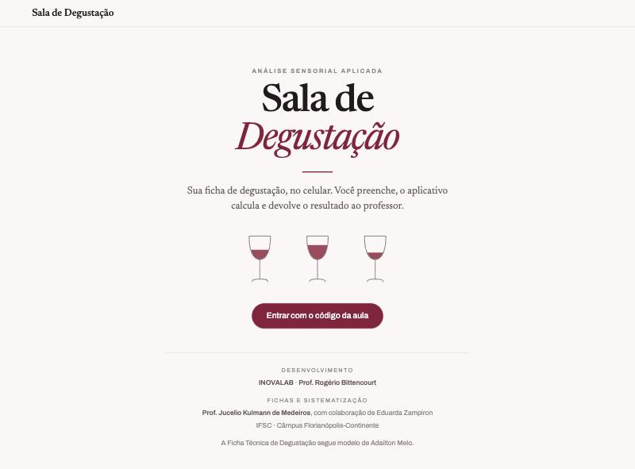
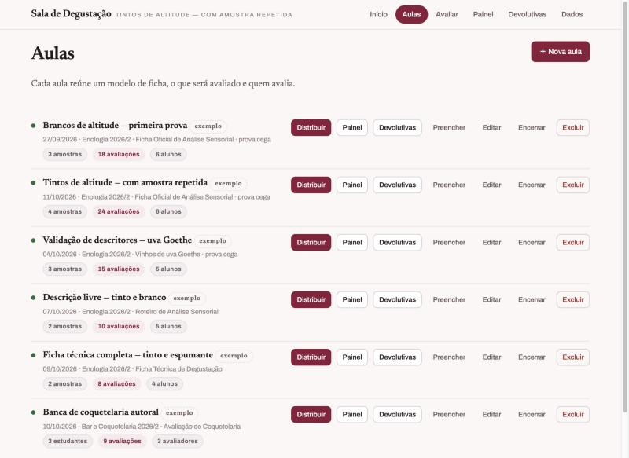
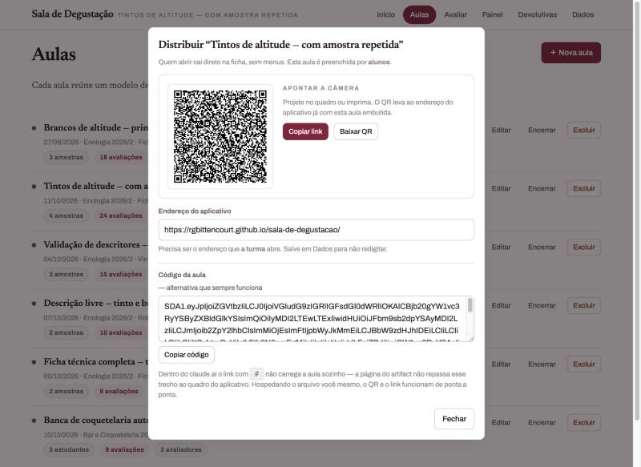
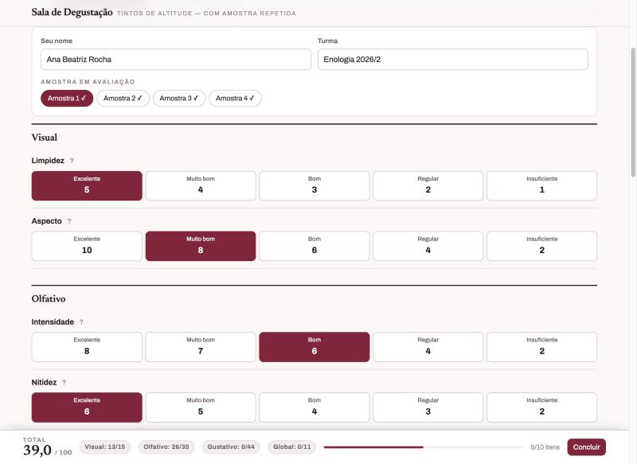
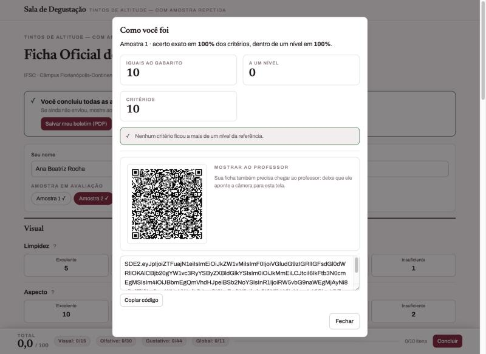
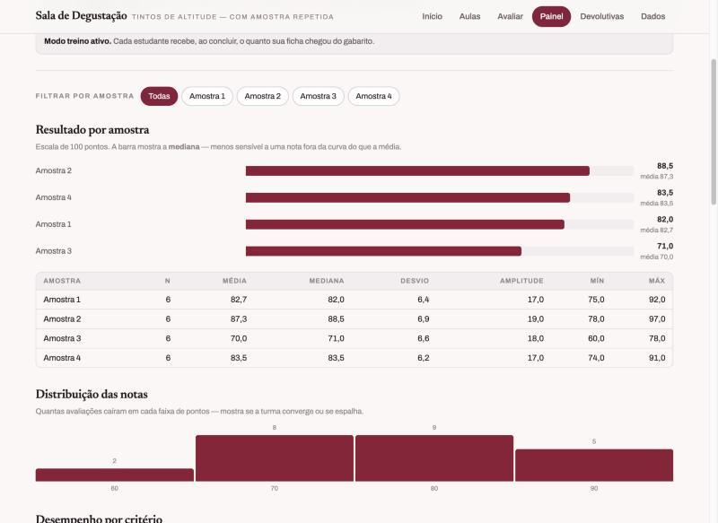
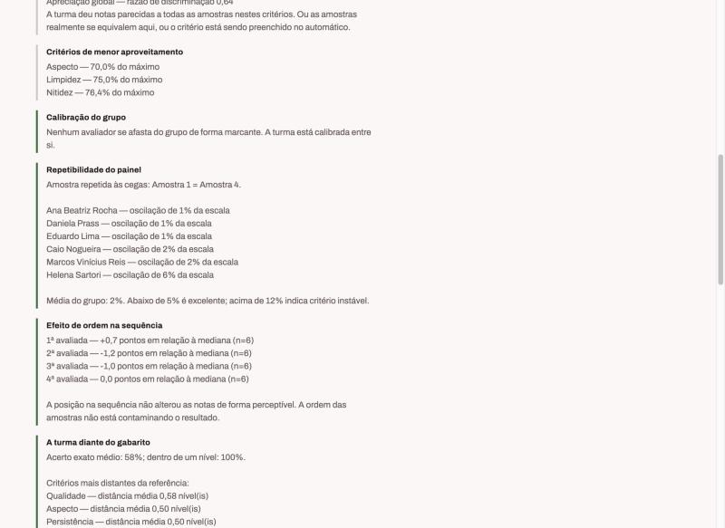
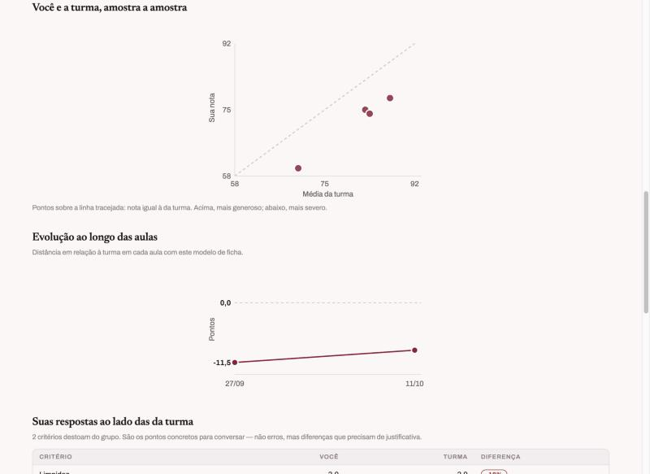
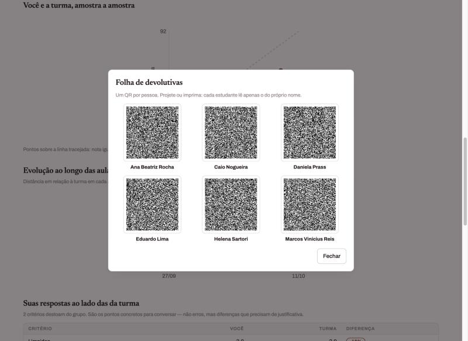
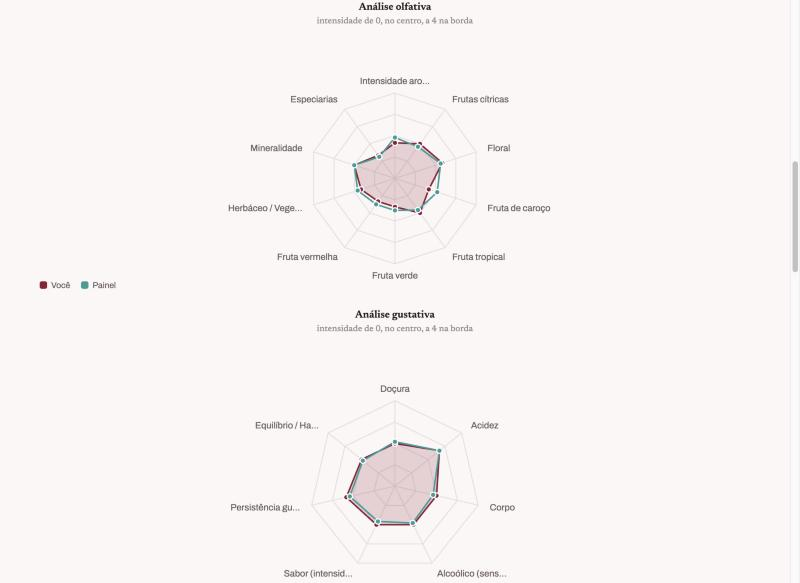

Análise sensorial em sala de aula
A Sala de Degustação põe as fichas de análise sensorial no celular do estudante, monta o painel da turma no computador do professor e gera devolutivas individuais a partir dos próprios dados da prova.
É um único arquivo. Não tem instalação, não pede cadastro e não depende de servidor. Tudo o que ele precisa — inclusive as bibliotecas de gerar e ler QR Code e de produzir PDF — está dentro do arquivo, e por isso funciona até sem internet.

Tudo é guardado no navegador do próprio aparelho. Nada sai dali sem uma ação explícita: o estudante decide mostrar o QR, você decide exportar. Nenhum serviço de terceiros recebe nome de estudante, e o aplicativo não faz chamada de rede por conta própria.
Faça cópia de segurança. Como os dados moram no navegador, limpar o histórico do site
os apaga. Em Dados → Cópia de segurança → Exportar você guarda um arquivo
.json com tudo.
O aplicativo já está publicado e funcionando. Para usar, basta abrir:
https://rgbittencourt.github.io/sala-de-degustacao/Abre no computador ou no celular. Como o endereço é https://, tudo funciona:
o QR Code, o leitor de câmera e a planilha do Google.
| Recurso | Arquivo local | Servidor na máquina | GitHub Pages | Moodle |
|---|---|---|---|---|
| Preencher fichas | sim | sim | sim | sim |
| Painel e devolutivas | sim | sim | sim | sim |
| PDF e planilha | sim | sim | sim | sim |
| QR com a aula embutida | não | sim | sim | sim |
| Ler QR pela câmera | não | só no próprio PC | sim | sim |
| Planilha do Google | não | sim | sim | sim |
Arquivo local. Baixe sala-degustacao.html e dê dois cliques. Serve para
preparar aulas e ler resultados, não para distribuir à turma — o endereço file://
existe só no seu computador.
Servidor na máquina. Útil para ensaiar com um celular de verdade antes da aula. Na
pasta do arquivo, rode python3 -m http.server 8000 e abra
http://localhost:8000/sala-degustacao.html.
Moodle. Envie o arquivo como recurso do tipo Arquivo, marcado para abrir em janela nova. O endereço do recurso é o que você usa.
Se o passo 4 abrir o aplicativo sem a aula, o endereço em Dados está errado.
Se o passo 5 não abrir a câmera, o endereço não é https://. A câmera do
navegador só funciona em contexto seguro.
Substitua o arquivo e pronto. Os dados não se perdem: ficam no navegador, separados do arquivo. Aulas de exemplo de versões antigas são trocadas sozinhas; as suas aulas não são tocadas.
| Papel | O que faz | Como entra |
|---|---|---|
| Professor | Cria aulas, lê o painel, gera devolutivas | Destrava o próprio aparelho |
| Aluno | Preenche fichas de degustação | QR ou código da aula |
| Avaliador | Julga os coquetéis dos alunos numa banca | QR ou código da aula |
O aplicativo abre em modo aluno para todo mundo — só a ficha, sem menu nenhum e sem indício de que existam outras telas. É assim de propósito: o estudante não precisa saber que há um painel, e não deve tropeçar nele.
Toque cinco vezes no nome “Sala de Degustação”, no alto da tela, em até quatro segundos. Pronto — e é permanente para aquele aparelho.
Para conferir o que a turma vê sem precisar de outro aparelho: Dados → Ver como aluno vê. Cinco toques no nome para voltar.
Não passe essa instrução à turma.
O papel de quem preenche vem do modelo de ficha, não de configuração. Escolher a ficha de Coquetelaria já faz a aula pedir estudantes em vez de amostras, e o painel falar em avaliadores em vez de alunos.
Em Aulas → Nova aula, dê um título, a data, a turma e escolha o modelo de ficha. O modelo decide tudo o mais: quem preenche, o que é avaliado e que análises o painel vai produzir.

Nas fichas de degustação são as amostras. Na ficha de coquetelaria são os estudantes que vão apresentar — e aí aparece um gerador de horários: informe o início e o intervalo e clique em Gerar horários.
Marque e a turma verá apenas “Amostra 1, 2, 3…”. O painel continua mostrando a identificação real, só para você.
Clique em Duplicar às cegas numa amostra: o aplicativo cria uma cópia com outro rótulo. Para a turma são bebidas diferentes; para o painel é a mesma, e com isso ele mede a repetibilidade de cada avaliador — o indicador mais honesto de que os critérios estão estáveis, porque não depende de concordar com ninguém. Vale a pena em toda prova com quatro ou mais amostras.
Marque Modo treino e preencha o Gabarito de uma ou mais amostras — como a ficha deveria ser respondida. Ao concluir, o estudante vê na hora o quanto chegou perto, e o painel mostra onde a turma se afasta da referência.
Só na coquetelaria. Marque a opção e Distribuir passa a oferecer um segundo código, que abre apenas a parte sensorial, para o estudante pontuar o próprio trabalho antes da banca. Distribua esse código antes de a banca começar.
Antes de tudo, preencha uma vez Dados → Endereço do aplicativo com o endereço que a turma vai abrir. É ele que entra no QR e no link.

Nada a fazer. O rascunho de cada pessoa é salvo no aparelho dela a cada toque — se o navegador fechar, nada se perde.

Com a câmera — Painel → Ler QR. Aponte para a tela do celular de cada estudante, um atrás do outro, sem fechar. Cada leitura dá um bipe e entra na lista.
Pelo código — Painel → Receber envios, e cole os códigos recebidos.
Pela planilha — se a ponte com o Google Sheets estiver configurada, os envios chegam sozinhos e você clica em Buscar na planilha.




Devolutivas → Folha de QR da turma: uma grade com um QR por pessoa, cada um com o nome embaixo. Projete ou imprima — cada estudante lê apenas o do próprio nome, e aquele QR carrega só os dados dele.

Para uma pessoa só: Por pessoa → QR desta pessoa, ou PDF desta pessoa para mandar o arquivo por e-mail.
Em Dados → Planilha:
E em Dados → Devolutivas → Baixar .txt sai a devolutiva da turma e de cada pessoa num arquivo só.
Esta página pode ser projetada ou impressa e entregue à turma.
Pelo QR — aponte a câmera do celular para o QR projetado e toque no link. Você cai direto na ficha.
Pelo código — abra o endereço que o professor passou, cole o código que começa com
SDA1. e toque em Entrar.
Escreva seu nome completo e a turma. Isso é pedido uma vez só.
Escolha a amostra nas etiquetas do topo e percorra a ficha. O botão ? ao lado de um critério abre a definição dele — use sempre que tiver dúvida sobre o que está sendo pedido.
No rodapé fica o total ao vivo e quantos itens faltam. Suas respostas são salvas a cada toque: se o navegador fechar, nada se perde.
Toque em Concluir. Aparece um QR Code. Chame o professor e mostre a tela — ele aponta a câmera e sua avaliação entra no aparelho dele na hora.
Se não der para fazer isso ali, toque em Copiar código e mande por Moodle, WhatsApp ou e-mail. Depois é só escolher a próxima amostra.
Depois da aula, o professor mostra uma folha com um QR para cada estudante. Leia apenas o QR com o seu nome. Ele contém só os seus dados, e a devolutiva fica guardada no seu aparelho.
Quando terminar todas as amostras — ou depois de receber a devolutiva — aparece o botão Salvar meu boletim (PDF). O PDF traz a aula, todas as respostas que você deu, sua nota e a devolutiva do professor. Fica no seu aparelho, para estudar depois.
Perdi a página antes de mostrar o QR. Abra de novo: suas respostas continuam salvas. Escolha a amostra e toque em Concluir outra vez — o mesmo QR é gerado.
Preenchi errado. Escolha a amostra de novo, corrija e conclua. A avaliação nova substitui a anterior.
Meus dados vão para algum lugar? Não. Ficam no seu aparelho até você mostrar o QR ou mandar o código.
Para a banca de coquetelaria. Também pode ser impressa.
Aponte a câmera para o QR projetado, ou cole o código enviado. Escreva seu nome — é ele que identifica suas notas no painel.
Na barra do topo ficam os estudantes, na ordem de apresentação, com horário. Escolha quem está apresentando agora. A ficha tem três partes:
Avaliação técnica — vinte itens de Sim ou Não sobre a execução: copo, dosagem, mise-en-place, higiene, domínio da técnica, postura. Cada item vale 5 pontos, e o bloco vale 50% da nota final.
Avaliação sensorial — sete critérios pontuados: Decoração, Aspecto visual, Aromas, Equilíbrio gustativo, Sensação gustativa, Drinkability e Comerciabilidade. Vale os outros 50%.
Penalidades — quatro perguntas. Responder Não em qualquer uma trava as duas avaliações em 50 pontos. Use com critério.
Devolutiva — um campo aberto. Escreva: é o que o estudante mais lê.
O painel mostra a severidade de cada jurado — o quanto cada um se afasta da média da banca. Isso não serve para corrigir nota dada; serve para calibrar a próxima banca. Por isso vale pontuar como você pontuaria em qualquer outra avaliação, sem compensar para cima ou para baixo.
IFSC · Câmpus Florianópolis-Continente — preenchida por alunos, avalia amostras
Escala de 100 pontos, mínimo 40. Dez critérios em quatro blocos:
| Bloco | Critério | Escala |
|---|---|---|
| Visual | Limpidez | 5 · 4 · 3 · 2 · 1 |
| Aspecto | 10 · 8 · 6 · 4 · 2 | |
| Olfativo | Intensidade | 8 · 7 · 6 · 4 · 2 |
| Nitidez | 6 · 5 · 4 · 3 · 2 | |
| Qualidade | 16 · 14 · 12 · 10 · 8 | |
| Gustativo | Intensidade | 8 · 7 · 6 · 4 · 2 |
| Nitidez | 6 · 5 · 4 · 3 · 2 | |
| Qualidade | 22 · 19 · 16 · 13 · 10 | |
| Persistência | 8 · 7 · 6 · 5 · 4 | |
| Global | Apreciação global | 11 · 10 · 9 · 8 · 7 |
As definições vêm da Sistematização da ficha oficial e aparecem no botão ? de cada critério. Há ainda uma seção opcional, Perfil do vinho, com doçura, acidez, amargor, álcool, corpo, tanino e maciez — descritiva, não pontua.
IFSC · Progoethe — preenchida por alunos, avalia amostras
Validação de descritores. Intensidade de 0 a 4 em 23 descritores, distribuídos por análise visual (4), olfativa (10), gustativa (7) e avaliação global (2), mais quatro defeitos e um campo aberto. É o modelo certo quando o objetivo é treinar o painel, e não dar nota.

IFSC · Câmpus Florianópolis-Continente — preenchida por alunos, avalia amostras
Três partes. A primeira é obrigatória e aberta: descrever o vinho na sequência visual, olfativo e gustativo, comentando posicionamento de gama, preço, região, idade, maturação e potencial de guarda. A segunda, opcional, verifica características em caixas. A terceira pede nova descrição à luz do que foi assinalado.
Modelo de Adailton Melo — preenchida por alunos, avalia amostras
Ficha descritiva completa: identificação da amostra, exame visual (com perlage para espumantes), olfativo com reconhecimento de grupos aromáticos, gustativo e avaliação final com maturidade, defeitos graves e harmonização. Itens que dependem do tipo de bebida não contam como obrigatórios.
IFSC — preenchida por avaliadores, avalia estudantes
Nota final = 50% técnica + 50% sensorial.
Média e mediana. A mediana é o valor do meio quando as notas são ordenadas. O painel mostra a mediana nas barras porque uma única nota fora da curva — comum numa turma em formação — desloca a média e não desloca a mediana. Quando as duas se afastam muito, há alguém avaliando de forma bem diferente do grupo.
Desvio-padrão. O quanto as notas se espalham. Na escala de 100 pontos: abaixo de 4 é consenso alto, de 4 a 8 é razoável, acima de 8 o grupo divergiu.
Caixa e bigode. A linha fina vai da menor à maior nota; o bloco cobre a metade central da turma; o traço claro é a mediana.
Separação entre as amostras. Diferença entre a primeira e a última colocada, em percentual da escala. Abaixo de 5% a turma praticamente não diferenciou as amostras — ou elas eram equivalentes, ou faltou repertório.
Calibração (viés). O quanto a pessoa se afasta, em média, da nota do grupo para as mesmas amostras. Positivo é mais generoso, negativo é mais severo. Não é erro: é régua. O que importa é ser consistente.
Concordância na ordenação (ρ de Spearman). Mede se a pessoa ordenou as amostras como a turma, independentemente de dar notas mais altas ou mais baixas. Acima de 0,7 é forte; de 0,3 a 0,7, parcial; abaixo disso, não se relaciona. É o indicador mais importante numa banca: dar nota alta não atrapalha, desde que a hierarquia esteja certa.
Uso da escala. Quem dá quase a mesma nota para tudo está escondendo diferenças que provavelmente percebeu.
Coerência da apreciação global (r de Pearson). Correlação entre a nota global que a pessoa deu e a soma dos demais critérios dela. Negativa indica que a impressão geral foi formada antes da análise, e não depois.
Repetibilidade. Exige amostra repetida às cegas. É a diferença entre as duas notas que a mesma pessoa deu à mesma bebida. Abaixo de 5% é excelente; acima de 12% indica critério instável. É o indicador mais honesto de todos — não depende de concordar com ninguém, só consigo mesmo.
Critérios que mais dividiram a turma. Dispersão de cada critério. São os que precisam ser retomados em aula.
Poder discriminante. Razão entre a variação entre amostras e a variação dentro de cada amostra. Baixo significa que todas receberam nota parecida — ou elas se equivalem naquele critério, ou ele está sendo preenchido no automático. Um descritor pode ter consenso alto e discriminação baixa: descreve bem, mas não diferencia.
Comparação item a item. Lado a lado, a resposta da pessoa e a da turma, com destaque só no que destoa de verdade. É o material mais concreto para a conversa individual.
Efeito de ordem. Desvio médio por posição na sequência. Queda das primeiras para as últimas é o padrão da fadiga sensorial — vale reduzir o número de amostras, prever pausa ou sortear a ordem. Subida costuma ser aquecimento do painel.
Proximidade do gabarito. Exige modo treino. Percentual de critérios iguais à referência, e percentual a até um nível de distância. Acima de 80% dentro de um nível, o vocabulário está ancorado.
Concordância da banca. Desvio entre jurados para o mesmo estudante. Abaixo de 5 pontos a banca está coesa; acima de 12, os critérios estão sendo lidos de formas diferentes.
Autoavaliação comparada à banca. Distância pequena é maturidade: conseguir provar o próprio trabalho sem se enganar. Superestimar e subestimar são problemas diferentes, e a devolutiva trata cada um de um jeito.
Uma ressalva importante. Quase tudo aqui compara uma pessoa com o grupo, e isso mede alinhamento, não acerto — o grupo inteiro pode estar errado. Os únicos indicadores independentes do consenso são a repetibilidade e a proximidade do gabarito. Por isso vale usar amostra repetida e gabarito sempre que a prova permitir.
Opcional. Sem ela o aplicativo funciona inteiro, com recolhimento por QR ou código. Com ela, cada envio cai direto numa planilha sua.
Só funciona com o aplicativo em https://. Aberto por duplo clique, o navegador
bloqueia a chamada e o aplicativo volta sozinho para o fluxo por código — nada quebra.
planilha/apps-script.gs do repositório. Salve./exec) e cole em
Dados → Endpoint da planilha. Salve e clique em Testar conexão.Três abas, criadas sozinhas: Aulas, Envios (uma linha por avaliação) e Detalhe (uma linha por resposta — é a que alimenta tabela dinâmica).
Ao alterar o script depois, use Implantar → Gerenciar implantações → editar → Versão: Nova versão. Sem isso o endereço continua servindo a versão antiga.
Não. Nem o professor, nem os alunos, nem os avaliadores. Basta um navegador.
O aplicativo em si, sim — inclusive gerar QR, ler QR, produzir PDF e exportar planilha. O que precisa de rede é o estudante alcançar o endereço, e a sincronização com o Google.
Carregam sozinhas no primeiro uso. Se não aparecerem, vá em Dados → Aulas demonstrativas → Carregar exemplos. São seis aulas, com 84 avaliações, que cobrem todos os modelos de ficha.
Dados → Aulas demonstrativas → Remover. Suas aulas não são tocadas.
Sim. Cada aula tem a sua turma, e o boletim do semestre permite filtrar por turma.
A segunda entrega substitui a primeira — o aplicativo considera nome e amostra como a identidade da avaliação. Peça nome completo.
Não. O aparelho dele só tem os dados dele, e a devolutiva que ele recebe por QR contém apenas o que é dele. A posição na turma aparece como percentual, sem expor nota de ninguém.
Os dados ficam no navegador. Sem uma cópia de segurança exportada, não há recuperação. Exporte em Dados → Cópia de segurança ao fim de cada aula.
Os modelos são fixos nesta versão. Para alterá-los é preciso editar o arquivo HTML — a seção
MODELOS DE FICHA fica no começo do código e é legível.
Sala de Degustação — manual de uso.
Desenvolvimento: INOVALAB · Prof. Rogério Bittencourt.
Fichas e sistematização: Prof. Jucelio Kulmann de Medeiros, com colaboração de Eduarda
Zampiron. IFSC · Câmpus Florianópolis-Continente.
A Ficha Técnica de Degustação segue modelo de Adailton Melo.
Aplicativo e código: github.com/rgbittencourt/sala-de-degustacao